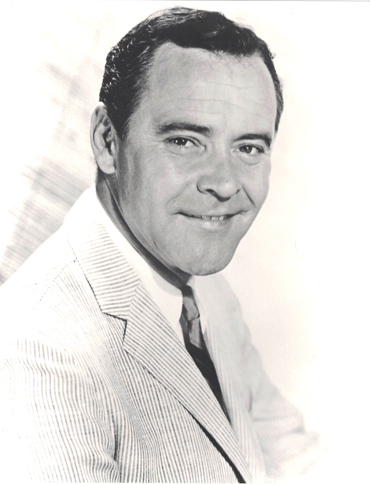

Product No. HEC-0045
$12.99
Shipping: $8.95
Description
8x10 B&W photograph
Full Description
Jack Lemmon (Deceased) was an American actor celebrated for his versatility in comedy and drama and for a career that spanned more than five decades. Born John Uhler Lemmon III on February 8, 1925, in Newton, Massachusetts, he became one of the most respected leading men of classic Hollywood. Lemmon was especially known for his collaborations with director Billy Wilder. He starred opposite Tony Curtis and Marilyn Monroe in "Some Like It Hot" and later appeared in Wilder films including "The Apartment," "Irma la Douce," "The Fortune Cookie," and "Avanti!" His nervous energy, expressive reactions, and ability to make ordinary characters both funny and sympathetic became trademarks of his performances. He also formed a memorable screen partnership with Walter Matthau. The two appeared together in films including "The Odd Couple," "The Front Page," "Grumpy Old Men," and "Grumpier Old Men," becoming one of cinema's most beloved comedy pairings. Lemmon's dramatic work was equally acclaimed. He won Academy Awards for "Mister Roberts" and "Save the Tiger" and received additional nominations for performances in films such as "The China Syndrome," "Missing," and "Glengarry Glen Ross." Jack Lemmon died on June 27, 2001, at age 76. His combination of comedy, warmth, vulnerability, and dramatic skill made him one of the most admired actors of his generation, and his autographs and movie memorabilia remain popular with collectors of classic Hollywood.
Condition
Excellent condition